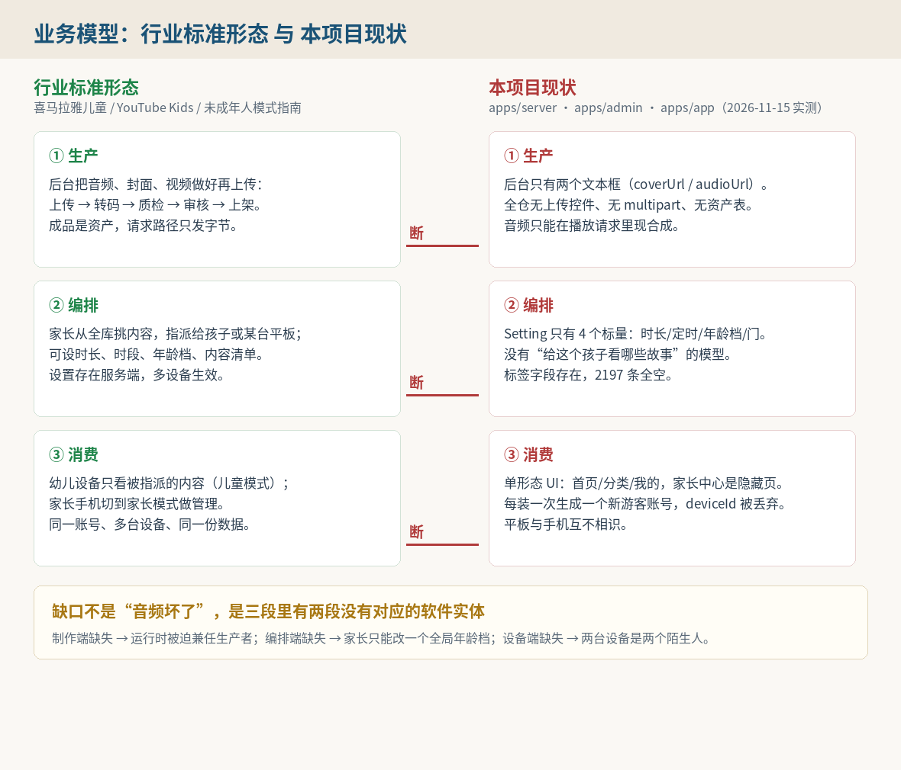
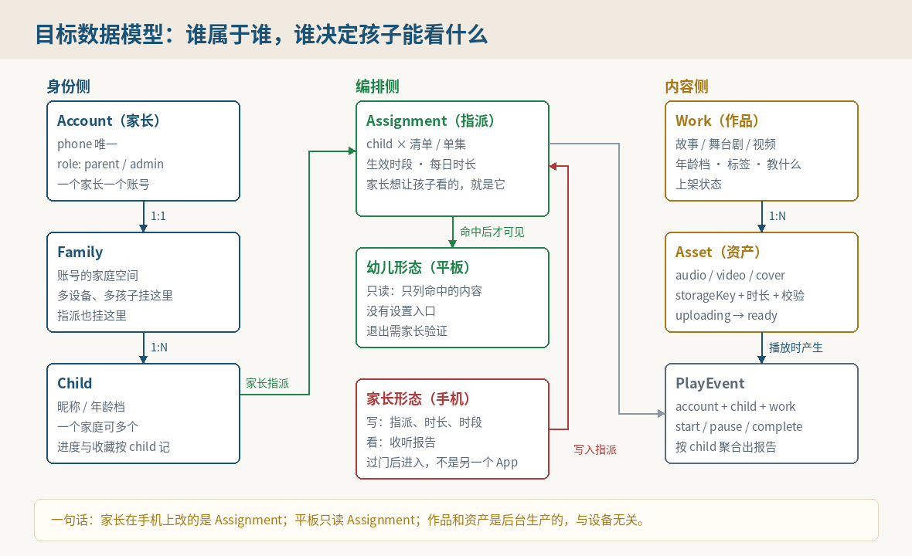

研究时间：2026-11-15 | 所属领域：儿童音频内容平台 | 研究对象类型：产品形态与内容生产管线
一句话：小故事铺要成立，需要三段软件——后台生产内容、家长编排内容、幼儿设备消费内容；现在的仓库只有第三段，而且第三段是匿名单形态的。
这不是我的偏好，是这类产品的通行结构。国家网信办 2024 年 11 月发布的《移动互联网未成年人模式建设指南》把这件事写成了条款：未成年人模式要「三方联动」、要「一键启动/退出后应用程序自动同步切换」、要「支持家长在多个移动智能终端进行统一设置」、退出必须「家长进行验证同意」、内容按年龄分龄推荐（3 周岁以下推荐音频内容以引导减少屏幕使用）。换成产品语言就是：一个 App、多种展示形态、家长在一台设备上管另一台设备。
三段各自的职责，以及现在代码的实际状态：

我把「断」标在三处，不是修辞。三处都能在代码里指到具体位置：
| 段 | 应该有什么 | 代码里有什么 | 证据 |
|---|---|---|---|
| 生产 | 上传音频/封面/视频、转码、质检、审核、上架 | 两个文本框，没有上传 | apps/admin/src/pages/StoryEditPage.tsx:225-231 |
| 编排 | 家长把内容指派给某个孩子/某台设备 | 4 个标量：时长、定时、年龄档、门 | apps/server/prisma/schema.prisma:183-195 |
| 消费 | 幼儿形态只读被指派的内容 | 单形态 UI，家长中心是隐藏页 | apps/app/lib/screens/mine_screen.dart:174-192 |
| 身份 | 家庭、设备、孩子 | 每装一次一个新游客账号 | apps/server/src/routes/auth-routes.ts:16 |
1.0 是一个静态站，靠 pREST 只读老库。老库里 2,197 条故事，字段只有标题、摘要、正文、分类、字数。没有封面，没有音频，没有标签，没有「这条故事教什么」。2026-11-14 按决策 D9 把 1.0 彻底删掉，这套字段结构被 2.0 原样继承——public.story_main 到今天仍是 title / excerpt / topic_desc / age_band / tags / status / duration_sec / cover_url / audio_url（schema.prisma:37-69），其中 cover_url、audio_url、tags 三个字段在线上是空集或近似空集。
这不是「内容不够」，是内容侧从来没有过「制品」这个概念。一条故事就是一段文字，音频是后来加上去的一个字符串字段。
2.0 的四天冲刺（M1 服务端 + 后台、M2 客户端、M3 补齐、M4 音频）分工方式很具体：谁负责首页、谁负责播放器、谁负责「我的」、谁负责后台列表。每一块都有验收标准，每一个验收标准都能截图或者跑单测。
这种切法在「把页面做出来」这个目标上效率极高——63 个后台用例、136 个服务端用例、58 个客户端用例，全绿。但它有一个结构性盲区：没有人负责「一块屏幕到下一块屏幕之间」的那条线。于是每一屏都对，连起来断。
最典型的是「继续听」。进度每 15 秒写进 app.progress（player_screen.dart:82-83），首页也确实把 continueListening 渲染出来了——但点那张卡片打开的是详情页，而 PlayerScreen 的构造函数不接受初始位置。数据有了，通路没接。
这是整条链上最关键的一次错位。
M4 要解决「内容没有音频」。当时的决策记录是「先 3 条验证，再批量回填」，实现方式是在 apps/server/src/services/tts-service.ts 里做了一套完整的合成器：分块、缓存、失败重试、backfillStory 回填 audioUrl。工程质量不差——按字数分块避开上游 3.6MB 截断，缓存命中走文件系统，Range 请求由 nginx 直发。
问题在于它被挂在了 HTTP 请求上。GET /api/stories/:id/audio 是唯一的合成入口，而这个接口只有在 story.audioUrl 已经有值的时候才会被 App 请求。于是形成一个闭环：
没有 audioUrl → App 不请求音频 → 服务端不合成 → audioUrl 永远为空
唯一的破口是 scripts/prod-deploy.sh:160 那段冒烟测试，它硬编码 curl 了一次 /api/stories/3/audio。所以线上 2,197 条里，只有 id=3 这一条有音频，而它之所以有，是因为部署脚本顺手打了一枪。
更麻烦的是，唯一能批量生产的脚本 apps/server/scripts/tts-backfill.mjs 在 :58-66 明确拒绝生产库：
if (/^story$/.test(dbName)) {
console.error(`REFUSING TO RUN: DATABASE_URL points at production database "${dbName}".`);
process.exit(1);
}
这条守卫本身是对的（D7 生产库只读）。但它和「按需合成」叠在一起，等于把生产环境制造音频的两条路都堵死了：一条要求先有 audioUrl，另一条拒绝在生产跑。
docs/product/17-tablet-support.md 是这份仓库里最诚实的一份文档，它开头就写：「设计稿只有手机版……下面的断点、侧边导航、内容宽度，是我按通用 Android 规范补的，不是设计交付物。」
实现也确实是布局级的：lib/theme/layout.dart 三个档位、≥900 用侧边导航、内容最大宽度 960、播放器在宽屏下分双栏。这些都做对了，而且有用——平板形态需要这套东西作为底座。
但它只解决了「同一套 UI 在宽屏上别难看」，没有解决「平板应该是另一个形态」。两者不是一回事：前者是响应式，后者是角色。
| 决策 | 当时的理由 | 单独看 | 合起来 |
|---|---|---|---|
| D1/D3 不迁数据，直读 legacy | 2,197 条已在库里，重导成本高 | 合理 | 内容侧天生没有封面/标签/音频 |
| D4 固定验证码 + 空实现短信 | 没有短信通道，先跑通链路 | 合理 | 客户端没有真实登录，账号退化成游客 |
| D6 游客升级规则待定 | 涉及账号合并，风险大 | 合理 | 重装即新账号，进度收藏成孤儿 |
| D7 生产库只读 | 防止误操作 | 合理 | 批量生产音频的脚本被自己挡在门外 |
四条都是稳健选择，没有一条是拍脑袋。但它们共同把系统推向了一个形状：内容只有文字、用户只有游客、生产只能走请求路径。这就是路径依赖的样子——每一步都对，最后站在一个奇怪的地方。
到 2026-11-15 为止，这套系统跑通的是：匿名游客按年龄档浏览一个静态目录，点开一条故事，播放器用三分钟静音计时器假装在播，同时诚实地把播放事件写进数据库。
它不是一个坏产品，它是一个还没长出生产端和编排端的消费端。
我把国内外主要玩家的做法按「形态怎么切」排了一遍。结论先说：母语市场几乎全部选「同一个 App 内切形态」，只有内容矩阵型的公司会额外做独立的家长枢纽 App。
A. 同一 App，底部一个「家长」入口
喜马拉雅儿童是这一派的代表。它的底部导航里直接有「家长」一项，进去是总收听时长和学习报告；收听时长这类设置在「家长 → 收听设置」里拖动滑块；儿童模式的开关在「我的 → 设置 → 儿童模式」，首次开启要设一个四位密码，退出要输密码，另外可以勾选允许的内容类别、设每日播放时长上限、开「退出提醒」。
这套结构的要点是：儿童模式是一个有进出、有密码的状态，家长页是同 App 内的一个视图。孩子拿到的界面和家长拿到的界面是同一份安装包。
B. 同一 App，设置里的一个「模式」开关
凯叔讲故事走的是这条路：「我的 → 设置 → 守护模式」，进入要先过家长验证，里面管使用时长和使用时段。宝宝巴士同理，「设置 → 每次使用时长 → 家长授权模式」。
这派的共同点是不新增导航项，把管控收在设置深处。代价是家长要记住路径，好处是儿童界面上完全不出现「家长」二字。
C. 独立家长 App（只在内容矩阵型公司出现）
宝宝巴士是唯一做独立枢纽的：界面新闻的报道里写得很清楚，「推出了应用官方下载平台『宝宝巴士大全』，主要面向家长，把所有 APP 集中到一个枢纽」。这是因为它有 150 多款 App，需要一个总入口；单品不需要。
Spotify Kids 是另一半例子：Kids 是独立 App，但家长管理入口「Grown ups」长在 Kids App 自己身上，输 PIN 进入，可以在里面建/删儿童账号、分享歌单、封禁内容。独立 App 不等于独立管理端。
D. 系统层：把设备锁在一个 App 里
这是绕过产品设计的一条捷径：Android 的屏幕固定、iOS 的引导式访问、Google 的 Family Link。它们解决的是「别让孩子切出去」，不解决「孩子该看到什么」。这类能力应该被当成补充，不能当替代——因为家长不会为了用一个故事 App 去学系统设置。
横向对比表：
| 产品 | 形态怎么切 | 家长验证方式 | 能否远程管另一台设备 | 内容控制粒度 |
|---|---|---|---|---|
| 喜马拉雅儿童 | 同 App，底部「家长」tab + 儿童模式密码 | 四位数密码 / 算式 | 未在公开文档中说明 | 内容类别勾选 + 每日时长 |
| 凯叔讲故事 | 同 App，设置里的守护模式 | 家长验证后进入 | 未说明 | 时长 + 时段 |
| 宝宝巴士 | 同 App 家长授权模式 + 独立「大全」枢纽 | 设置内家长验证 | 未说明 | 每次使用时长 |
| 洪恩识字 | 同 App，右上角设置 → 识字报告 | 设置入口 | 未说明 | 每日目标、速度、单次时长、环节开关、多儿童档案 |
| 小伴龙 | 同 App，首页左上角 → 父母中心 | 算式验证 | 有「微信远程控制」的说法（单一来源） | 单次时长 + 作息 |
| YouTube Kids | 同 App，锁图标 + 数学题 + 4 位 passcode | 数学题 / 自定义密码 | 能：家长账号可远程 block / share 内容到孩子 profile | 频道/视频级黑白名单、搜索开关、多 profile |
| Spotify Kids | 独立 Kids App，管理在「Grown ups」 | PIN | 能：主 App 里分享歌单给孩子 | 歌单级、内容类型、封禁艺人/单曲 |
| Khan Academy Kids | 同 App，「For Parents」区 | 滑动进入 | 否 | 学习等级、进度查看 |
| Netflix | Kids profile + 成熟度分级 | 账号密码 / PIN | 能（网页端改孩子 profile） | 分级 + 单片屏蔽 |
三个可迁移的做法，我们家现在都没有：
Child 表早就建好了，App 一次都没调用过。把指南原文逐条对到代码上：
| 指南要求 | 我们的实现 |
|---|---|
| 入口最简化，至少 3 种方式进入 | ✗ 无模式概念，只有「我的」里的家长中心 |
| 首次进入可设生日/年龄区间，允许多个未成年人用户 | ✗ Child 表有字段，App 从不创建 |
| 退出需家长验证同意 | △ 有算式门，但门只护「家长中心」这一页 |
| 多设备统一设置 | ✗ 每台设备一个新账号，互不相识 |
| 时长分龄（不满 16 岁默认 1 小时） | ✗ dailyLimitMin 存了，全代码无人读取 |
| 22 时至次日 6 时不提供服务 | ✗ 无 |
| 分龄推荐（3 岁以下推音频） | △ 有 ageBand，但场景卡硬编码年龄档，可绕 |
| 防绕过（退出、改时间要验证） | ✗ 无 |
（✗ 不满足，△ 部分满足）
这份指南是「指引性文件」，不是强制国标，但它决定了这个品类的用户预期。一条都不满足，意味着这个产品在家长眼里不是「儿童模式」，只是一个儿童内容的播放器。
后台要把音频做好上传，业界有成熟范式。Media Processing Workflows把它拆成四段和三条不变量：
三条不变量是这套东西能长期活着的原因：幂等认领（重复事件、重复上传算出同一个 key，一次条件写决定谁干活）、单一状态行（资产状态只有一处真相）、输出不可变且带版本（media/<id>/v<n>/，重处理写新版本，指针移动）。
音频这一支的具体参数也有共识：一次解码到无损中间态，两遍 loudnorm 归一到 -16 LUFS，再分发成 Opus 与 AAC 双编码、波形峰值、字幕；公开派生文件一律 Cache-Control: public, max-age=31536000, immutable，缓存命中率做到 95% 以上靠的就是「URL 带版本」。
对照我们的现状：没有 Ingest（没有上传入口）、没有 Process（没有转码）、没有 Orchestrate（合成直接跑在请求里）、Deliver 做了一半（nginx + Range，但没有版本化 URL，缓存靠文件系统 mtime）。
上游生产长什么样，喜马拉雅创作者平台的流程可以直接抄：上传 → 绑定专辑 → 完善节目信息（标题/简介/标签/封面/定时发布）→ 转码 → 审核 → 发布。音频文件有明确规格（MP3 优先，128kbps 推荐，单文件 ≤200MB，低于 64kbps 不收）。这套流程的存在本身就说明一件事：「制作」是一个有状态的、可审核的、批量发生的工序，不是一次 HTTP 请求。
顺带一个成本锚点。有声书行业的公开数字是：约 9,300 词折合 1 小时成品音频，制作 1 小时成品约需 4 小时工作，人工旁白与后期各约 200 美元/成品小时（Kanonara 引 ACX 数据）。我们这批内容中位数 754 字、最长 38,401 字——按 9,300 词/小时粗算，全量人工制作是不现实的，TTS 是唯一可行路径。但 TTS 应该跑在后台的批处理里，产出文件，进资产表；不是跑在孩子的播放请求里。
你描述的场景（手机装家长形态、平板装幼儿形态、同一家庭）在海外有一个非常干净的参照：Dino Kids 的家庭账号。它的设计选择值得逐条看：
这个坑我们已经在坑底了：loginAsGuest 每次调用都新建 account 且不建 family（apps/server/src/services/auth-service.ts:41-46），而 registerDevice 只传 {}（api_client.dart:328-334）——服务端连设备号都不收（auth-routes.ts:16 的 GuestBody 只有 nickname）。冒烟脚本倒是传了 deviceId（prod-deploy.sh:155），被静默丢弃。
国内的家庭账号参照也一致：华为教育中心的儿童会员权益共享是「家长帐号创建儿童帐号，多设备登录共享」；小伴龙的宣传口径是「多终端数据互通，手机、平板登录同一账号同步学习记录」。
结论：家庭账号不是可选项，它是「家长手机管平板」这个需求的物理前提。 现在两台设备是两个陌生人，谈形态切换没有意义。
错位一：制作放进了请求路径。 纵向看，这是 D7（生产库只读）与「按需合成」叠加的结果；横向看，所有成熟平台的生产都在后台，请求路径只发字节。修法不是给 TTS 加队列，是把制作挪回后台——队列只是后台批处理的实现细节。
错位二：编排被压缩成一个标量。 四天冲刺里「家长中心」被当成一个页面交付，于是数据模型只留下四个字段。横向看，所有同类产品的家长端都在做「挑内容、指派、定时段」这三件事。修法不是给 Setting 加字段，是新增指派对象。
错位三：双形态被做成了一个隐藏页面。 文档里其实写了「退出儿童模式」（01-product-brief.md:62、:71），代码里这个词只出现在两句注释（parent_gate_screen.dart:10、app_state.dart:11）——模式从来没被实现过，只实现了门。这就是为什么关掉 parentGate 开关也没用：门是独立逻辑，跟模式无关。
错位四：设备不存在。 这是最要命的一条，因为它是前三条的地基。没有设备身份，家长的改动没有落点；没有家庭聚合，两台设备同步不了；没有角色，同一个安装包不知道该进哪种形态。

一句话说清：家长在手机上改的是 Assignment；平板只读 Assignment；作品和资产是后台生产的，与设备无关。
这张图里有三个刻意的选择：
Device 挂在 Family 下、带 role，而不是让「账号」直接等于「设备」。因为一台设备换主人是常态（旧手机变故事机），而家庭不变。Assignment 是独立实体，不是 Setting 的字段。因为它是多对多的（一个孩子多维清单，一条故事可进多个孩子的清单），塞进标量里必然长成 JSON 字符串。Work 与 Asset 分离。一条故事可以有一个音频、一张封面、将来一段视频；把三个 URL 拍在 Story 行上（现在就是这样），迟早要改。选择一：双形态怎么切？
三个候选：a) 两个安装包；b) 一个安装包 + 一个模式状态；c) 一个安装包 + 按设备角色自动决定形态。
我的判断是 c 为主、b 为辅：设备首次配对时选角色（「这台是给孩子用的平板」/「这台是我自己的手机」），角色决定启动后进哪种形态；家长手机上允许手动切回幼儿形态预览（因为家长需要看孩子看到的东西）。理由有两条，一条来自证据一条来自结构：
选择二：音频从哪来？
正解是后台生产、上传、入库，TTS 降级成后台的一个批量工具。落地时有三件事必须一起做，否则会退化成「上传了但播不了」：
<audio> 预览，直接说明「这条上架后孩子听到的就是这个」）；durationSec 由上传时探测得出，不由人工填（线上 2,196 条是 0，导致播放器全都按 3 分钟兜底）；选择三：指派怎么表达？
最小可用版本只需要三张表：Collection（家长自建的清单，可以先只有名字）、CollectionItem（清单里放哪几条、什么顺序）、Assignment（哪个孩子/哪台设备 → 哪个清单，附生效时段与每日上限）。不要求一次做完「按星期几的课表」这种复杂编排。
我在上一版报告里把「TTS 异步化」排在第一位，那个判断要撤回——它是在给错位一开药。按闭环重排：
| 步 | 做什么 | 完成判据 | 大致工作量 |
|---|---|---|---|
| 1 | 资产表 + 上传端点 + 卷挂载 + nginx 发字节 | 后台能传一个 mp3，<audio> 能播，Story 指向 assetId |
服务端 1 天，后台 1 天 |
| 2 | 上架校验 + 时长探测 | 新上架条目 durationSec > 0；缺音频的条目在儿童端不出现 |
半天 |
| 3 | 家庭/设备/孩子模型 + 配对 | 平板显示 6 位码，手机输码后两台设备同一 familyId |
服务端 1.5 天，App 1 天 |
| 4 | 两种形态 + 角色持久化 | 平板上没有设置入口；手机上过门后进管理面；同一安装包 | App 2 天 |
| 5 | Assignment + 儿童端只读命中 | 家长在手机上勾三条故事，平板刷新后只见这三条 | 服务端 1 天，两端各 1 天 |
| 6 | 时长/时段真正执行 + 报告按 child 聚合 | 到点锁屏；报告能按孩子分开 | 2 天 |
前三项做完，「孩子能听到声音」这件事才第一次成立；第 3 到 5 项做完，「家长手机管平板」才第一次成立。第 6 项是把已经存在的四个开关从「装饰」变成「功能」。
最可能（不动结构，继续按屏幕补功能）：下一个需求是「家长中心加个内容黑名单」。因为没有 Assignment 模型，黑名单会变成一个 JSON 字段塞进 Setting；因为没有设备身份，它只在家长自己的手机上生效。半年后 Setting 变成一个塞了七个 JSON 字符串的表，而平板上的内容一条都没变。
最危险（先用 TTS 把音频灌满）：为了让「孩子能听到」，直接在生产跑批量合成。按 7.3 秒/条加块间隔估算，2,196 条约 4.4 小时、约 3.7GB。合成期间 GET /api/stories/:id/audio 会把请求同步挂住，而 App 侧的超时是 25 秒（player_service.dart:53）——大部分条目会超时，播放器继续静音兜底，用户感受到的和今天完全一样，但服务器被打满、audio_cache 卷吃掉几十 G。更糟的是这些音频没有资产状态、没有版本，将来换音色只能原地覆盖。
最乐观（先补资产与家庭，再谈形态）：按 4.4 的顺序，两周内把第 1 到第 5 项做完。届时能演示的是一条完整的链：运营在后台上传一段音频 → 上架 → 家长在自己手机上勾三条故事指派给孩子 → 平板刷新后只看到这三条 → 点开真的有声音 → 到点自动停 → 家长手机上看到今天的收听报告。这条链跑通一次，产品才算真的存在。
代码与线上实测（2026-11-15）
apps/admin/src/pages/StoryEditPage.tsx:225-231（资源区只有两个文本框）apps/server/prisma/schema.prisma:37-69（Story）、:106-131（Family/Child）、:183-195（Setting）apps/server/src/routes/auth-routes.ts:16（GuestBody 只有 nickname）、apps/server/src/services/auth-service.ts:41-46（loginAsGuest 不建 family）apps/app/lib/services/api_client.dart:328-334（registerDevice 传 {}）、apps/app/lib/services/player_service.dart:53（25 秒超时）apps/app/lib/screens/mine_screen.dart:174-192（家长中心为 push 页面）apps/server/src/services/tts-service.ts:215-221（backfillStory 回填 audioUrl）、apps/server/scripts/tts-backfill.mjs:58-66（拒绝生产库）scripts/prod-deploy.sh:155（冒烟测试传 deviceId）、:160（curl 到 /api/stories/3/audio，之后又把 audio_cache 行与文件删掉）docs/product/01-product-brief.md:62,71（文档里的「退出儿童模式」）、apps/app/lib/screens/parent_gate_screen.dart:10、apps/app/lib/state/app_state.dart:11（代码里只有注释）GET /api/stories?page=1&pageSize=100（22 页聚合）2,197 条；audioUrl 非空 1 条（id=3）；coverUrl 非空 0 条；featured 0 条；tags 非空 0 条；年龄档分布 3-6:721 / 6-9:1176 / 9+:300外部来源
暂缺
本文采用横纵分析法：纵轴追踪小故事铺从 1.0 静态站到 2.0 三端的演进，还原每个决策的约束与后果；横轴在 2026-11 这个时间截面上，对比国内外儿童内容产品的形态切法、家长管控路径与媒体生产管线；最后交汇出「四个错位」与落地顺序。方法源头为数字生命卡兹克提出的横纵分析法，融合历时-共时分析与纵向-横截面研究设计。